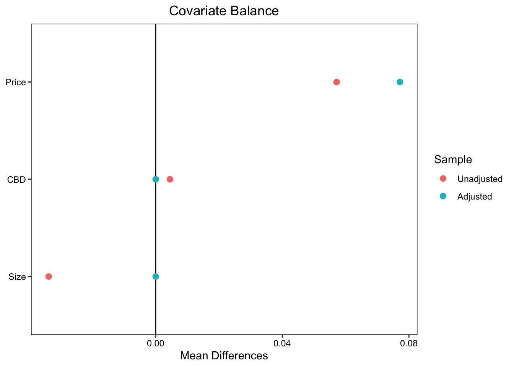
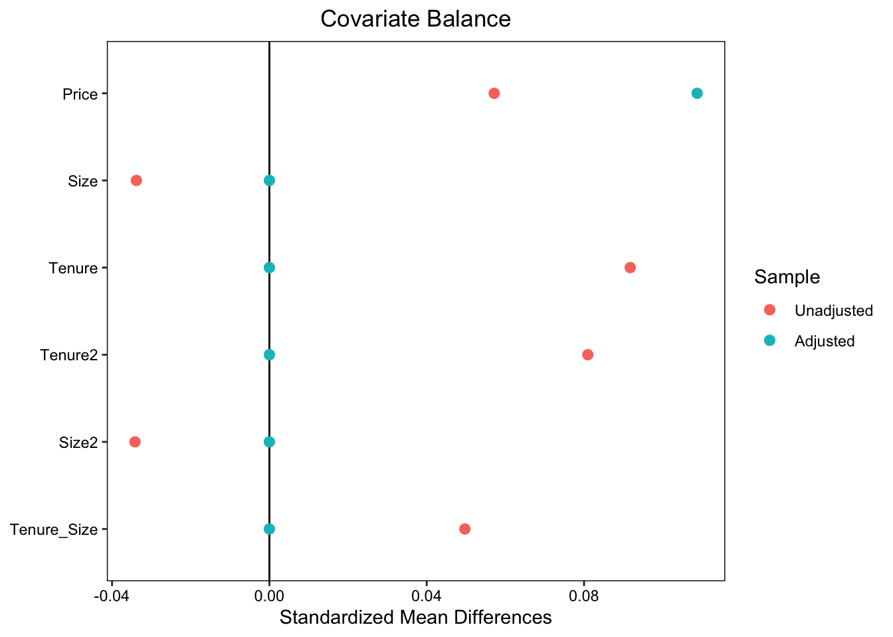
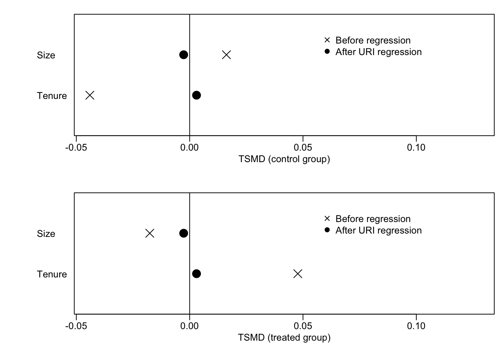
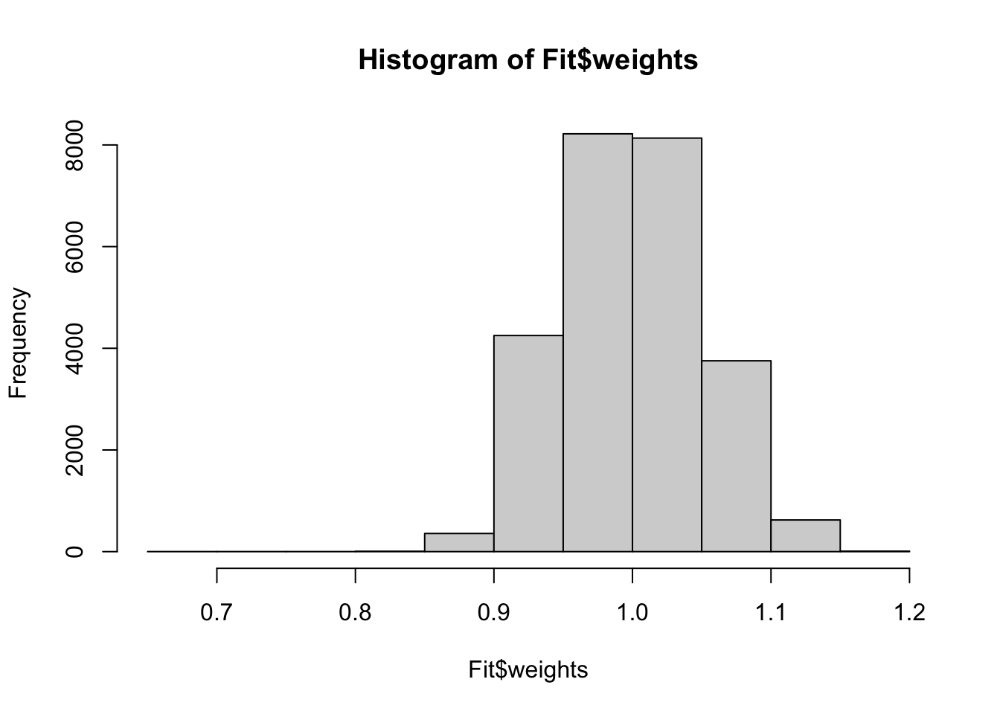

7 把握を目的とする要約: モーメントバランス
\(X\) の種類が多く、Balancing weightsを計算することが困難な場合、\(X\)の分布を近似的にバランスさせることが有力です。 例えば、分布を特徴づける代表的な値である平均値や分散(モーメント)のみをバランスさせるのであれば、大量の事例数がなかったとしても実用的です。
7.1 OLS
近年の研究により、線型モデルのOLS推定は、Moment Balanceを達成することが確認されています (Imbens 2015; Chattopadhyay and Zubizarreta 2023)。 Chattopadhyay and Zubizarreta (2023) は、以下を証明しました。
Important
- 統計モデル \[Y\sim\beta_0 + \beta_DD+\beta_1X_1+..\beta_LX_L\] をOLS推定した得られる \(\beta_D\) は一般に以下と一致します。
事例 \(1,..,N_{1}\) が\(D_i=1\), \(N_{1}+1,..,N\) が\(D_i=0\) だとします。全ての\(X=[X_1,..,X_L]\) について、\[\frac{\omega_1X_{l,1}+..+\omega_{N_{1}}X_{l,N_{1}}}{D=1の事例数}\] \[= \frac{\omega_{N_{1}+1}X_{l,N_{1}+1}+..+\omega_{N}X_{l,N}}{D=0の事例数} \tag{7.1}\] \[\frac{\omega_1+..+\omega_{N_1}}{D=1の事例数}=\frac{\omega_{N_1+1}+..+\omega_{N}}{D=0の事例数}=1 \tag{7.2}\] を満たす \(W\) から、分散が最も小さいものを選ぶ
\[\beta_D=\frac{\omega_1Y_1+..+\omega_{N_{1}}Y_{N_{1}}}{D=1の事例数} - \frac{\omega_{N_{1}+1}Y_{N_{1}+1}+..+\omega_{N}Y_{N}}{D=0の事例数}\]
Equation 7.1 は、\(X\) の平均値を \(D=\{0,1\}\) 間で均質化していることを意味しています。 Equation 7.2 は、ウェイトとして総和を1に基準化しています。 すなわちStep 1において、平均値をバランスさせるウェイトの中から、最も分散が小さいものを選んでいることを意味しています。 Step 2において、このウェイトを用いた平均差を計算しています。
ウェイトの分散は、最終的な推定結果の推定誤差に影響を与えます。 一般に、ウェイトの分散が小さいと、推定誤差が削減される傾向があります。
7.1.1 例
部屋の広さ (Size) と 築年数 (Tenure) をバランスさせた後に、2022/2021年の平均取引価格差を推定します。 \(Price\sim D + Size + Tenure\) をOLS回帰すると、以下のようなバランスが達成されます。
赤点 (Unadjusted) は、バランス前の単純平均差を表します。 価格が大きく上昇していますが、取引物件の部屋の広さは狭くなり、築年数は古くなっています。 青点 (Adjusted)は、OLSによる暗黙のバランス後の差を示しています。 結果、SizeやTenureの平均値は完全にバランスしており、結果平均取引価格差も上昇しています。 Tenure2やSize2は、築年数や部屋の広さの二乗項(分散)、Tenure_Sizeは交差項(共分散)を示しており、これらについてはOLSを行ったとしてもバランスしていません。
分散や共分散もバランスさせるためには、二乗項や交差項もモデルに導入したモデル \(Price\sim D + Size + Tenure + Size2 + Tenure2 + Tenure_Size\) をOLS推定します。 結果、以下の図の通り、分散や共分散もBalanceします。

7.1.2 Post selection
モーメントバランスにおいては、分布の特徴をどこまでバランスさせるのかが問題となっています。 事例数が十分あれば、3乗項などの高次項もバランスさせることは可能ですが、変数の数が爆発的に増えてしまいます。
このような問題に対して、OLS推定を行う前に重要な変数のみを選択することが必要となります。 変数選択を行う方法としては、Chernozhukov, Hansen, and Spindler (2015) がPost Double Selectionという手法を提案しており、幅広く応用されています。 当該手法はhdm packageを用いて実装できます。 Angrist and Frandsen (2022) は、手法の入門と包括的な評価を行っています。
Y = Data$Price # Outcome
D = Data$D # Treatment
X = select(
Data,
Size,
Size2,
Tenure,
Tenure2,
Tenure_Size) # Control
Fit = hdm::rlassoEffect(
x = as.matrix(X),
d = D,
y = Y
) # Fit post double selection
summary(Fit) # Show results[1] "Estimates and significance testing of the effect of target variables"
Estimate. Std. Error t value Pr(>|t|)
d1 3.8506 0.3304 11.65 <2e-16 ***
---
Signif. codes: 0 '***' 0.001 '**' 0.01 '*' 0.05 '.' 0.1 ' ' 1選択された変数は、以下のように表示できます。 部屋の広さと築年数の平均値のみが、選択されたことが確認できます。
Fit$selection.index # Show selected X Size Size2 Tenure Tenure2 Tenure_Size
TRUE FALSE TRUE FALSE FALSE 7.2 OLSの問題点と解決策
OLSにより暗黙のうちに計算されるWeightは、平均値をバランスします Equation 7.1 。 しかしながら、Balancing weightsに求められる他の性質は必ずしも満たされません。
7.2.1 解釈困難なウェイト
バランス後の、\(X\) の平均値がどのような水準になるのか、一般に不透明です。 結果を解釈するためには、\(X\) の平均値は明確な水準、例えばデータ全体での平均値と一致させることが望ましいです。 しかしながら、OLSはそのような水準との一致を保証しません。
OLSによるバランス後の\(X\)の平均値について、lmw packageにより診断できます。

黒丸はOLSによるバランス後、ばつ印はバランス前の平均値を示しています。 Control groupは、\(D=0\) (2021年)、Treatment groupは、\(D=1\) (2022年)の値です。 0線は、サンプル平均を示しています。
同図からバランス前は、2022年についてはSizeがサンプル平均よりも小さく、Tenureは長いことが確認できます。 黒丸を見ると、OLSによるバランス後はどちらも2022年と2021年の間で平均差がなくなることが確認できます。 ただし ０線からは乖離しており、サンプル平均とは一致していないことが確認できます。
7.2.2 負の荷重
Balancing weightsは、正の値を取ることが望まれます。 しかしながらOLSが生成するWeightは、負の値を取る可能性があり、ミスリーデイングな推定結果をもたらす可能性があります。
lmw packageは、OLSが生成するweightsの値を計算します。 例えばhist関数により、ヒストグラムとして可視化できます。

7.2.3 解決策
Entropy weights (Hainmueller 2012) や Stable weights (Zubizarreta 2015) は、サンプル平均との一致や正の値を取ることを条件として課した上で、weightを計算します。 このためOLSが持つ問題点の多くを克服しており、より信頼できるバランス後の比較分析が可能です。 これらの手法は WeightIt package (Greifer 2024) で容易に実装できます。
7.3 Reference
Angrist, Joshua D, and Brigham Frandsen. 2022. “Machine Labor.” Journal of Labor Economics 40 (S1): S97–140.
Chattopadhyay, Ambarish, and José R Zubizarreta. 2023. “On the Implied Weights of Linear Regression for Causal Inference.” Biometrika 110 (3): 615–29.
Chernozhukov, Victor, Christian Hansen, and Martin Spindler. 2015. “Valid Post-Selection and Post-Regularization Inference: An Elementary, General Approach.” Annu. Rev. Econ. 7 (1): 649–88.
Greifer, Noah. 2024. WeightIt: Weighting for Covariate Balance in Observational Studies. https://ngreifer.github.io/WeightIt/.
Hainmueller, Jens. 2012. “Entropy Balancing for Causal Effects: A Multivariate Reweighting Method to Produce Balanced Samples in Observational Studies.” Political Analysis 20 (1): 25–46.
Imbens, Guido W. 2015. “Matching Methods in Practice: Three Examples.” Journal of Human Resources 50 (2): 373–419.
Zubizarreta, José R. 2015. “Stable Weights That Balance Covariates for Estimation with Incomplete Outcome Data.” Journal of the American Statistical Association 110 (511): 910–22.